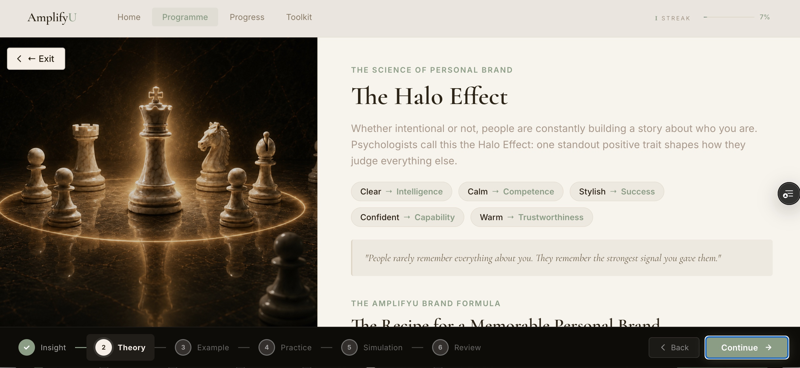
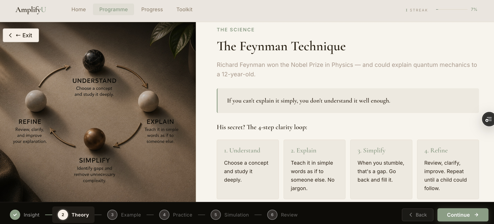

AmplifyU isn't opinion-based coaching. Every session is grounded in peer-reviewed research — from how the brain processes information, to the science of what makes a communicator memorable. Here is the evidence that shapes every module.
"Most communication training tells you what to do. The science tells you why it works — and why so much advice doesn't."
Cognitive Science
The Feynman Technique
Richard Feynman won the Nobel Prize in Physics and could explain quantum mechanics to a 12-year-old. His principle: if you can't explain it simply, you don't understand it well enough.
This is the foundation of Day 1 — the Clarity session. AmplifyU trains you to strip ideas to their simplest form before adding any complexity back. The result is communication that lands with anyone, at any level, under any pressure.
Memory & Attention
Miller's Law
In 1956, psychologist George Miller discovered something fundamental about how humans think: working memory can only hold 7 (±2) chunks of information at once.
Every sentence you speak creates a memory load. Stack too many ideas and your listener loses the thread — not because they're not trying, but because their brain can't physically hold it. Every precision and editing session in AmplifyU is built around this reality. Say less. Land more.

Memory & Attention
Miller's Law

Personal Brand Science
The Halo Effect

Cognitive Science
The Feynman Technique
Learning Theory
Cognitive Load Theory
When working memory is overloaded, comprehension collapses. The listener stops processing — not because they've lost interest, but because their brain has hit capacity.
AmplifyU teaches you to communicate in a way that reduces cognitive load in your audience: shorter sentences, cleaner structure, deliberate pauses that give the brain time to absorb. The result is ideas that land faster and stick longer.
Vocal Psychology
Prosody & Processing Fluency
Research into vocal delivery reveals something counterintuitive: easy to hear means easy to trust. When speech is fluent — well-paced, well-paused, with natural pitch variation — listeners rate the content as more credible, even when the words are identical.
This is Processing Fluency: the brain associates ease of processing with truth and competence. AmplifyU's vocal sessions are built around this — training pace, pause, and pitch until they become unconscious tools rather than conscious performance.
"Easy to hear means easy to trust. The way you say something changes how much people believe it."
Narrative Science
Dual Coding Theory
Allan Paivio's research showed that information presented through both words and mental imagery is retained far more effectively than words alone. Stories activate both verbal and visual channels simultaneously. Facts alone activate only one.
This is the cognitive reason stories move people — and data rarely does on its own. AmplifyU's storytelling modules are designed around this: training professionals to translate data, ideas, and arguments into narratives that create mental images and stick.
Cognitive Science
The Feynman Technique
If you can't explain it simply, you don't understand it well enough. The foundation of Day 1 — clarity as the ultimate form of intelligence.
Memory & Attention
Miller's Law
The human brain can hold 7 (±2) chunks of information at once. Every precision and editing session is built around this — say less, land more.
Learning Theory
Cognitive Load Theory
When working memory is overloaded, comprehension collapses. AmplifyU teaches you to reduce cognitive load in your listener — so your ideas land faster and stick longer.
Vocal Psychology
Prosody & Processing Fluency
Easy to hear means easy to trust. The science behind why pace, pause, and pitch change how people receive — and remember — what you say.
Narrative Science
Dual Coding Theory
Stories activate both verbal and visual channels simultaneously. Facts alone activate only one. The reason stories move people — and data alone rarely does.
Career Research
The PIE Model
Harvey Coleman's research shows performance accounts for just 10% of career advancement. Image and exposure — how you're seen and who sees you — account for the rest.
Career Research
The PIE Model
Harvey Coleman's landmark research at IBM revealed something most professionals never want to accept: performance accounts for only 10% of career advancement. Image — how you're perceived — accounts for 30%. Exposure — who sees you and how — accounts for 60%.
AmplifyU doesn't just teach you to communicate better in the room. It teaches you to be seen differently — to shape your professional image and increase the quality of your exposure at every level of your organisation.
The science doesn't change what communication is. It changes how deliberately you can practise it — and how much faster you can improve when every session is built around how the brain actually works.